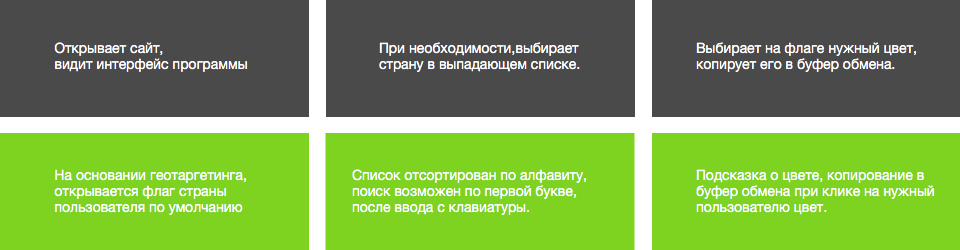
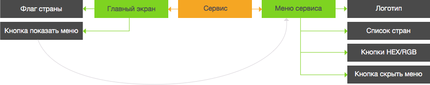
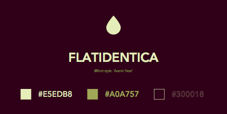
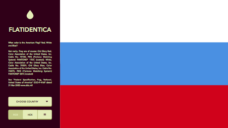
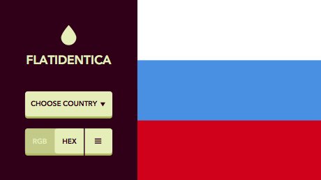
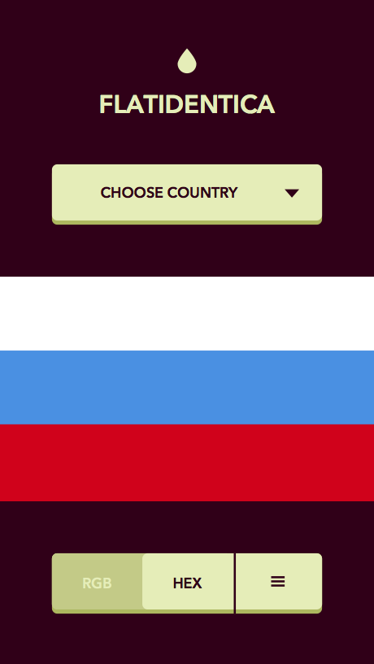

— История создания —
Иногда в моей работе случаются странные вещи. Прошло уже не мало лет, как я покинул иностранную фриланс-биржу oDesk, который в настоящее время переименован в UPwork. Я уже и не помню, на кого я там работал и что делал. Но, оказывается, помнят про меня.
В один холодный вечер мне на почту упало письмо, с ТЗ, которое занимало ровно один лист формата А4. В письме заказчик (если верить Google Translate) просил меня создать макет сервис-колорпикер, который позволял бы дизайнерам выбирать правильные цвета флагов со всего мира. После недолгих переговоров и поступления предоплаты, я приступил к заданию.
— Концепция и брифинг —
Согласно заданию, необходимо было создать макет веб-сайта и приложения для iPhone. Все это должно было быть выполнено в едином стиле. Требования: минимализм, лаконичность, «flat». Короче говоря, все то, что я так люблю. Разумеется, был составлен бриф:
Идея проекта: сolorpicker для выбора правильных цветов государственных флагов мира.
Задачи продукта: общее хранилище всех настоящих цветов мировых государств.
Целевая аудитория: дизайнеры и верстальщики разных отраслей.
Конкуренты: строго говоря, их нет. Есть множество разрозненной информации по всему интернету, в Wikipedia, на различных сайтах государств, на всевозможных форумах и прочих ресурсах.
Ограничения по выходу в свет: нет.
Монетизация: с показа рекламы в приложении под iOs, покупка платной версии приложения.
Критерий успешности проекта: оценки пользователей в AppStore, окупаемость создания приложения.
Поскольку проводить анкетирование не было возможности, в связи с тем, что заказчик являлся представителем другой страны, я провел анализ целевой аудитории путем посещения профилей людей, которые искали, либо размещали подобную информацию в интернете. Очень помогло детальное изучение их профилей на Facebook. Благодаря этому, стало возможным определить более конкретного потребителя продукта заказчика. Был создан ключевой персонаж — среднестатистически возможный пользователь нашего сайта и приложения:
— Ключевой персонаж —
Имя: Adam Fenkel.
Данные: 27 лет, житель среднего города, с хорошим достатком и постоянной работой. Работник дизайн-студии, временами фрилансер. Хорошо образован, уделяет много внимания деталям.
Ключевые цели: в контексте приложения, цель одна — не ошибиться в цветовом оформлении своей работы. Особенно актуально, при сдаче работ в полиграфию.
Мотивация: удовлетворение качеством проделанной работы. Похвала начальства.
Негатив: необходимость переделывать работу заново, проводить поиск по всей сети, фильтровать противоречивую информацию из разных источников.
Увлечения: Машины, мотоциклы, дизайн.
Интернет-активность: посещает Facebook, Dribble, Behance.
Использует в работе: Photoshop, Illustrator, inDesign.
К сожалению, точную платежеспособность пользователя выявить довольно затруднительно, по причине отсутствия интервью как такового, но принимая во внимание социальный статус ключевого персонажа, а также учитывая невысокую стоимость приложения, мне представляется, что с этим вопросом все в порядке.
С контекстным сценарием тоже все предельно ясно. Специфика разрабатываемого сервиса такова, что персонаж будет пользоваться им сидя возле компьютера, запустив свое основное рабочее приложение. После создания своего макета, он открывает сайт, ищет на нем флаг, который ему необходим, выбирает цвет, копирует его, вставляет в форму своего приложения, после чего успешно сайт закрывает.
— Карта пользовательских путешествий и mindmap —
Соответственно, карта пользовательских путешествий будет выглядеть так:
А mindmap, вот так (серой стрелкой показано взаимодействие):
— Скетчи —




На этом все, откланиваюсь. Напоследок скажу, что заказчик остался доволен. Дальнейшая судьба прототипа в руках графического дизайнера, верстальщика и программистов. Исследование в полном виде было переведено на английский язык и отправлено хозяину сервиса. Если вы хотите связаться со мной, если вам есть, что предложить — пишите. Ссылки в футере.